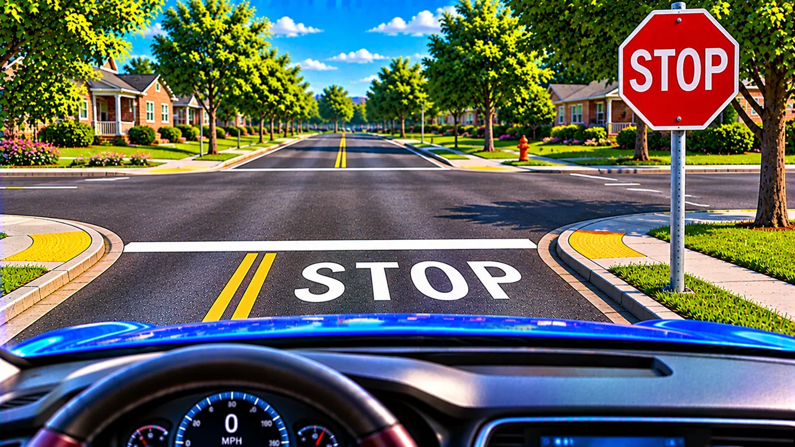

Maryland learner’s permit prep
PERMIT
TO DRIVE
Practice road signs and driving scenarios, review explanations, or take a timed 25-question test.
Start free practice
Try a sample question
What should you do when you approach a stop sign at an empty intersection?
Independent Maryland permit practice.
Maryland MVA knowledge test information